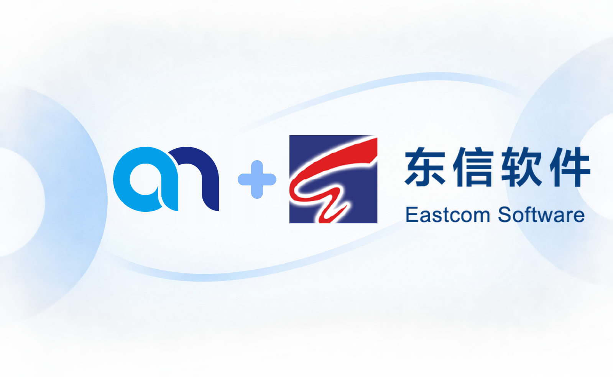

News · November 18, 2026 · by OpenAN

The OpenAN community is pleased to announce that Hangzhou Eastcom Software Technology Co., Ltd. (Eastcom Software) has joined the project as an ecosystem participant. Its agentic AI products for telecom operators and its role in China Mobile's high-level autonomous network construction bring a practical OSS perspective to the community's work toward autonomous networks.
Eastcom Software is a leading provider of network operations support software and services in China, focusing on operations support system (OSS) solutions for telecom operators and large enterprises. Its products span intelligent O&M, big data, artificial intelligence, computing-network convergence, and cloud-native technologies, and it delivers agentic AI products deeply integrated with business scenarios. It is also a key participant in China Mobile's high-level autonomous network construction.
Eastcom Software leverages the OpenAN project and the A2A-T protocol to enable multi-agent collaboration between its proprietary OSS agents and third-party vendors or systems. This helps establish a cross-domain, cross-vendor end-to-end business closed loop, while strengthening collaboration across the OpenAN community as the project advances open, vendor-neutral autonomous networking.
Follow the GitHub repositories and the project website for the latest updates.